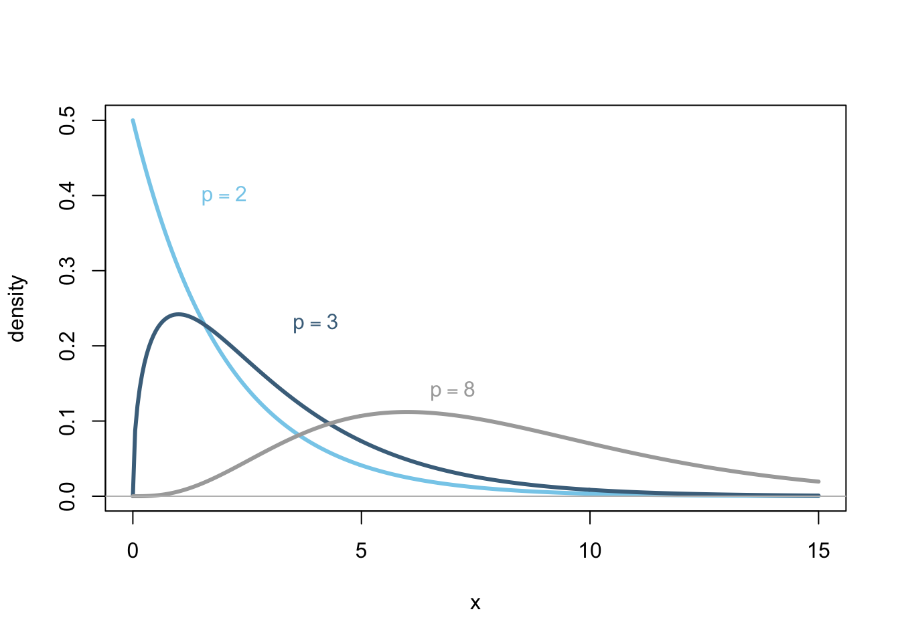
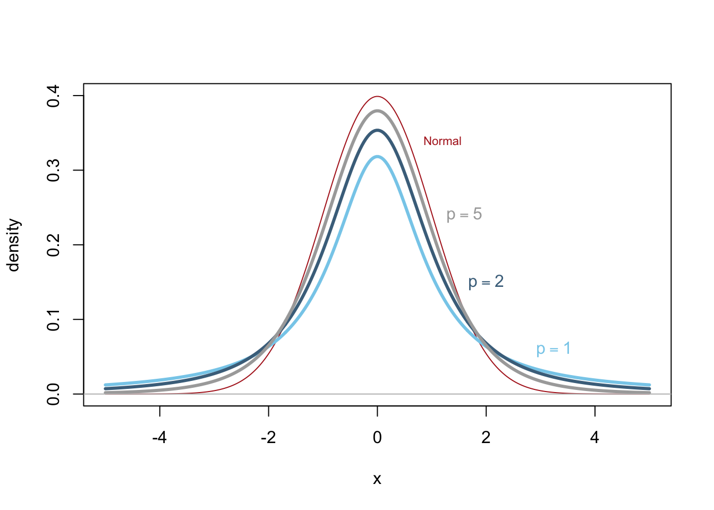
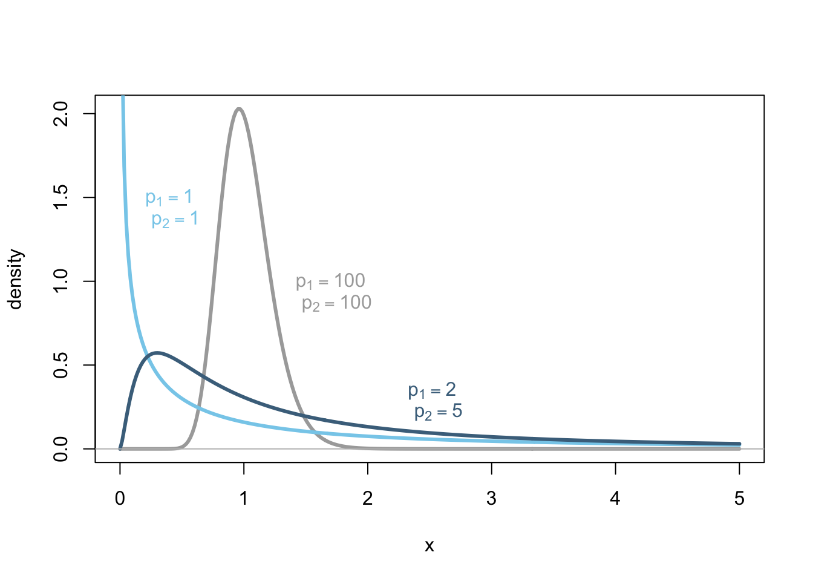

Making Inference
It is common to only have a sample of data from some population of interest. Using the information from the sample to reach conclusions about the population is called making inference. When statistical inference is performed properly, the conclusions about the population are almost always correct.
Hypothesis Testing
One of the great focal points of statistics concerns hypothesis testing. Science generally agrees upon the principle that truth must be uncovered by the process of elimination. The process begins by establishing a starting assumption, or null hypothesis (\(H_0\)). Data is then collected and the evidence against the null hypothesis is measured, typically with the \(p\)-value. The \(p\)-value becomes small (gets close to zero) when the evidence is extremely different from what would be expected if the null hypothesis were true. When the \(p\)-value is below the significance level \(\alpha\) (typically \(\alpha=0.05\)) the null hypothesis is abandoned (rejected) in favor of a competing alternative hypothesis (\(H_a\)).
Click for an Example
Managing Decision Errors
When the \(p\)-value approaches zero, one of two things must be occurring. Either an extremely rare event has happened or the null hypothesis is incorrect. Since the second option, that the null hypothesis is incorrect, is the more plausible option, we reject the null hypothesis in favor of the alternative whenever the \(p\)-value is close to zero. It is important to remember that rejecting the null hypothesis could however be a mistake.
| \(H_0\) True | \(H_0\) False | |
|---|---|---|
| Reject \(H_0\) | Type I Error | Correct Decision |
| Accept \(H_0\) | Correct Decision | Type II Error |
Type I Error, Significance Level, Confidence and \(\alpha\)
A Type I Error is defined as rejecting the null hypothesis when it is actually true. (Throwing away truth.) The significance level, \(\alpha\), of a hypothesis test controls the probability of a Type I Error. The typical value of \(\alpha = 0.05\) came from tradition and is a somewhat arbitrary value. Any value from 0 to 1 could be used for \(\alpha\). When deciding on the level of \(\alpha\) for a particular study it is important to remember that as \(\alpha\) increases, the probability of a Type I Error increases, and the probability of a Type II Error decreases. When \(\alpha\) gets smaller, the probability of a Type I Error gets smaller, while the probability of a Type II Error increases. Confidence is defined as \(1-\alpha\) or the opposite of a Type I error. That is the probability of accepting the NULL when it is in fact true.
Type II Errors, \(\beta\), and Power
It is also possible to make a Type II Error, which is defined as failing to reject the null hypothesis when it is actually false. (Failing to move to truth.) The probability of a Type II Error, \(\beta\), is often unknown. However, practitioners often make an assumption about a detectable difference that is desired which then allows \(\beta\) to be prescribed much like \(\alpha\). In essence, the detectable difference prescribes a fixed value for \(H_a\). We can then talk about the power of of a hypothesis test, which is 1 minus the probability of a Type II Error, \(\beta\). See Statistical Power in Wikipedia for a starting source if your are interested. This website provides a novel interactive visualization to help you understand power. It does require a little background on Cohen’s D.
Sufficient Evidence
Statistics comes in to play with hypothesis testing by defining the phrase “sufficient evidence.” When there is “sufficient evidence” in the data, the null hypothesis is rejected and the alternative hypothesis becomes the working hypothesis.
There are many statistical approaches to this problem of measuring the significance of evidence, but in almost all cases, the final measurement of evidence is given by the \(p\)-value of the hypothesis test. The \(p\)-value of a test is defined as the probability of the evidence being as extreme or more extreme than what was observed assuming the null hypothesis is true. This is an interesting phrase that is at first difficult to understand.
The “as extreme or more extreme” part of the definition of the \(p\)-value comes from the idea that the null hypothesis will be rejected when the evidence in the data is extremely inconsistent with the null hypothesis. If the data is not extremely different from what we would expect under the null hypothesis, then we will continue to believe the null hypothesis. Although, it is worth emphasizing that this does not prove the null hypothesis to be true.
Evidence not Proof
Hypothesis testing allows us a formal way to decide if we should “conclude the alternative” or “continue to accept the null.” It is important to remember that statistics (and science) cannot prove anything, just show evidence towards. Thus we never really prove a hypothesis is true, we simply show evidence towards or against a hypothesis.
Calculating the \(p\)-Value
Recall that the \(p\)-value measures how extremely the data (the evidence) differs from what is expected under the null hypothesis. Small \(p\)-values lead us to discard (reject) the null hypothesis.
A \(p\)-value can be calculated whenever we have two things.
A test statistic, which is a way of measuring how “far” the observed data is from what is expected under the null hypothesis.
The sampling distribution of the test statistic, which is the theoretical distribution of the test statistic over all possible samples, assuming the null hypothesis was true.
A distribution describes how data is spread out. When we know the shape of a distribution, we know which values are possible, but more importantly which values are most plausible (likely) and which are the least plausible (unlikely). The \(p\)-value uses the sampling distribution of the test statistic to measure the probability of the observed test statistic being as extreme or more extreme than the one observed.
All \(p\)-value computation methods can be classified into two broad categories, parametric methods and nonparametric methods.
Parametric Methods
Parametric methods assume that, under the null hypothesis, the test statistic follows a specific theoretical parametric distribution. Parametric methods are typically more statistically powerful than nonparametric methods, but necessarily force more assumptions on the data.
Parametric distributions are theoretical distributions that can be described by a mathematical function. There are many theoretical distributions. (See the List of Probability Distributions in Wikipedia for details.) Some of the most widely used distributions are described below.
The Normal Distribution
One of the most important distributions in statistics is the normal distribution. It is a theoretical distribution that approximates the distributions of many real life data distributions, like heights of people, heights of corn plants, baseball batting averages, lengths of gestational periods for many species including humans, and so on.
More importantly, the sampling distribution of the sample mean \(\bar{x}\) is normally distributed in two important scenarios.
- The parent population is normally distributed.
- The sample size is sufficiently large. (Often \(n\geq 30\) is sufficient, but this is a general rule of thumb that is sometimes insufficient.)
Mathematical Formula
\[ f(x | \mu,\sigma) = \frac{1}{\sqrt{2\pi}\sigma}e^{-\frac{1}{2}\left(\frac{x-\mu}{\sigma}\right)^2} \] The symbols \(\mu\) and \(\sigma\) are the two parameters of this distribution. The parameter \(\mu\) controls the center, or mean of the distribution. The parameter \(\sigma\) controls the spread, or standard deviation of the distribution.
Graphical Form

Comments
The usefulness of the normal distribution is that we know which values of data are likely and which are unlikely by just knowing three things:
that the data is normally distributed,
\(\mu\), the mean of the distribution, and
\(\sigma\), the standard deviation of the distribution.
For example, as shown in the plot above, a value of \(x=-8\) would be very probable for the normal distribution with \(\mu=-5\) and \(\sigma=2\) (light blue curve). However, the value of \(x=-8\) would be very unlikely to occur in the normal distribution with \(\mu=3\) and \(\sigma=3\) (gray curve). In fact, \(x=-8\) would be even more unlikely an occurance for the \(\mu=0\) and \(\sigma=1\) distribution (dark blue curve).
The Chi Squared Distribution
The chi squared distribution only allows for values that are greater than or equal to zero. While it has a few real life applications, by far its greatest use is theoretical.
The test statistic of the chi squared test is distributed according to a chi squared distribution.
Mathematical Formula
\[ f(x|p) = \frac{1}{\Gamma(p/2)2^{p/2}}x^{(p/2)-1}e^{-x/2} \] The only parameter of the chi squared distribution is \(p\), which is known as the degrees of freedom. Larger values of the parameter \(p\) move the center of the chi squared distribution farther to the right. As \(p\) goes to infinity, the chi squared distribution begins to look more and more normal in shape.
Note that the symbol in the denominator of the chi squared distribution, \(\Gamma(p/2)\), is the Gamma function of \(p/2\). (See Gamma Function in Wikipedia for details.)
Graphical Form

Comments
It is important to remember that the chi squared distribution is only defined for \(x\geq 0\) and for positive values of the parameter \(p\). This is unlike the normal distribution which is defined for all numbers \(x\) from negative infinity to positive infinity as well as for all values of \(\mu\) from negative infinity to positive infinity.
The t Distribution
A close friend of the normal distribution is the t distribution. Although the t distribution is seldom used to model real life data, the distribution is used extensively in hypothesis testing. For example, it is the sampling distribution of the one sample t statistic. It also shows up in many other places, like in regression, in the independent samples t test, and in the paired samples t test.
Mathematical Formula
\[ f(x|p) = \frac{\Gamma\left(\frac{p+1}{2}\right)}{\Gamma\left(\frac{p}{2}\right)}\frac{1}{\sqrt{p\pi}}\frac{1}{\left(1 + \left(\frac{x^2}{p}\right)\right)^{(p+1)/2}} \]
Notice that, similar to the chi squared distribution, the t distribution has only one parameter, the degrees of freedom \(p\). As the single parameter \(p\) is varied from \(p=1\), to \(p=2\), …, \(p=5\), and larger and larger numbers, the resulting distribution becomes more and more normal in shape.
Note that the expressions \(\Gamma\left(\frac{p+1}{2}\right)\) and \(\Gamma(p/2)\), refer to the Gamma function. (See Gamma Function in Wikipedia for details.)
Graphical Form

Comments
When the degrees of freedom \(p=30\), the resulting t distribution is almost indistinguishable visually from the normal distribution. This is one of the reasons that a sample size of 30 is often used as a rule of thumb for the sample size being “large enough” to assume the sampling distribution of the sample mean is approximately normal.
The F Distribution
Another commonly used distribution for test statistics, like in ANOVA and regression, is the F distribution. Technically speaking, the F distribution is the ratio of two chi squared random variables that are each divided by their respective degrees of freedom.
Mathematical Formula
\[ f(x|p_1,p_2) = \frac{\Gamma\left(\frac{p_1+p_2}{2}\right)}{\Gamma\left(\frac{p_1}{2}\right)\Gamma\left(\frac{p_2}{2}\right)}\frac{\left(\frac{p_1}{p_2}\right)^{p_1/2}x^{(p_1-2)/2}}{\left(1+\left(\frac{p_1}{p_2}\right)x\right)^{(p_1+p_2)/2}} \] where \(x\geq 0\) and the parameters \(p_1\) and \(p_2\) are the “numerator” and “denominator” degrees of freedom, respectively.
Graphical Form

Comments
The effects of the parameters \(p_1\) and \(p_2\) on the F distribution are complicated, but generally speaking, as they both increase the distribution becomes more and more normal in shape.
Nonparametric Methods
Nonparametric methods place minimal assumptions on the distribution of data. They allow the data to “speak for itself.” They are typically less powerful than the parametric alternatives, but are more broadly applicable because fewer assumptions need to be satisfied. Nonparametric methods include Rank Sum Tests and Permutation Tests.